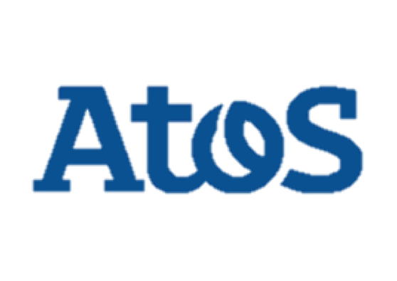

About the project
What is the problem?
Notarising and legalising documents can be tedious. Very often, documents that are issued in a country and are required to be used in another one require to pass through a long chain of stamps and signatures, including those of a Notary Public, the Ministry of Foreign Affairs, and the respective embassy.
Here's the process:
What is our solution?
We can establish an analogy between verifying the authenticity of the document, and verifying the value of money. If the blockchain can help in solving the second problem with Bitcoins, then it can also eventually help in fixing the first one.
Hence our idea consists in building a platform which allows you to:
In fact, we aim to have the document (or a reference to it) uploaded to the blockchain, with relevant signatures.
Meet the client
Atos is one of the biggest actors in the digital services companies worldwide. Its turnover in 2015 was of 11 billions euros and employs approximately 100 000 employees in 72 countries including France where Atos is the principal secure online payment service provider for businesses via its worldwide subsidiary company. The group is the Cloud leader in Europe.
The activities at Atos focus on four principal jobs:
The group is the global partner of the Olympic games since 1992 and counts among its clients large international accounts in all sectors of activity.
Meet the team
Sadir Abdul Hadi
Team leader- Client liaison- Technical lead
I’m Sadir Abdul Hadi, and I’m studying computer science at UCL. I didn’t have an idea about what the word “Blockchain” means before the start of this project. However, now that I’m starting to understand it, I admit I’m getting passionate about it.
Kristelle Feghali
Chief researcher- Chief website editor
Hi I'm Kristelle, I am a second year student at UCL studying Computer Science. This project was all new to me and I did not know what to expect before we started. I find the subject very interesting and the possibilities blockchain offers are impressive. I am glad to be working on it with my team.
Alexandru Chiriac
Secondary researcher
Hi! I’m Alex and I’m currently a Computer Science student at University College London (UCL). I like overcoming difficult challenges and I’m always striving to improve my skills and learn as much as I can by focusing on the tasks that I’m given or by achieving the goals I set to myself.